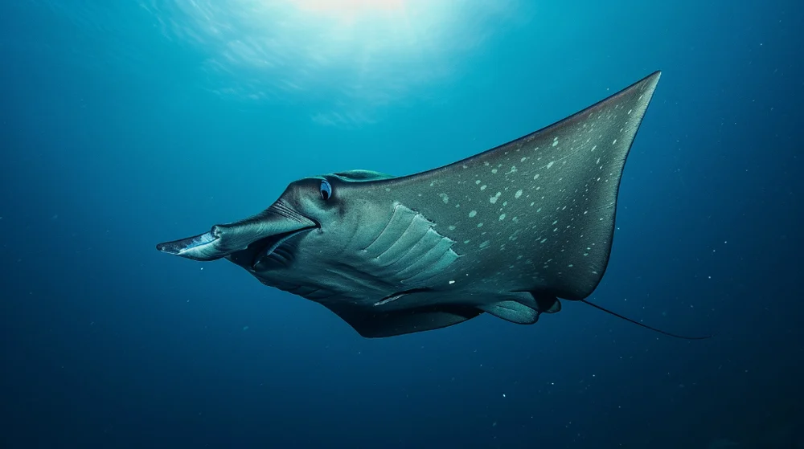
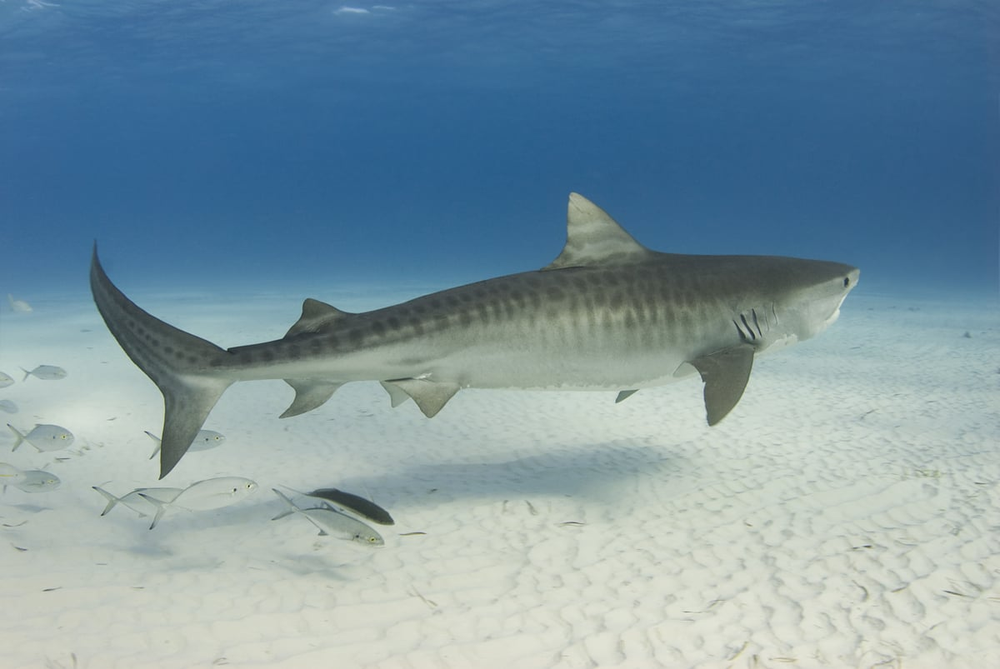

Bruskfiskene opstod for omkring 450 mio. år siden. Hajer, rokker og havmus er nutidens repræsentanter.
Udviklingen af kæben gjorde det muligt for bruskfiskene at lave aktiv jagt, da de nu kunne holde fast i føden samt jage større bytte.
De parrede finner løste et nyt problem: styring. En svømmende krop har tendens til at rulle og dreje sig ukontrolleret. Brystfinnerne fungerer som vinger i vandet og giver hajkroppen præcis manøvredygtighed — afgørende for en aktiv jæger.

Skelet af brusk.
Kæbe med udskiftelige tænder: hajer kan skifte tænder tusindvis af gange i løbet af livet.
Parrede finner: brystfinner og bugfinner giver kontrol over bevægelse i alle tre dimensioner.
Ingen svømmeblære: bruskfiskene kompenserer med store fedtfyldte levere, der giver opdrift.